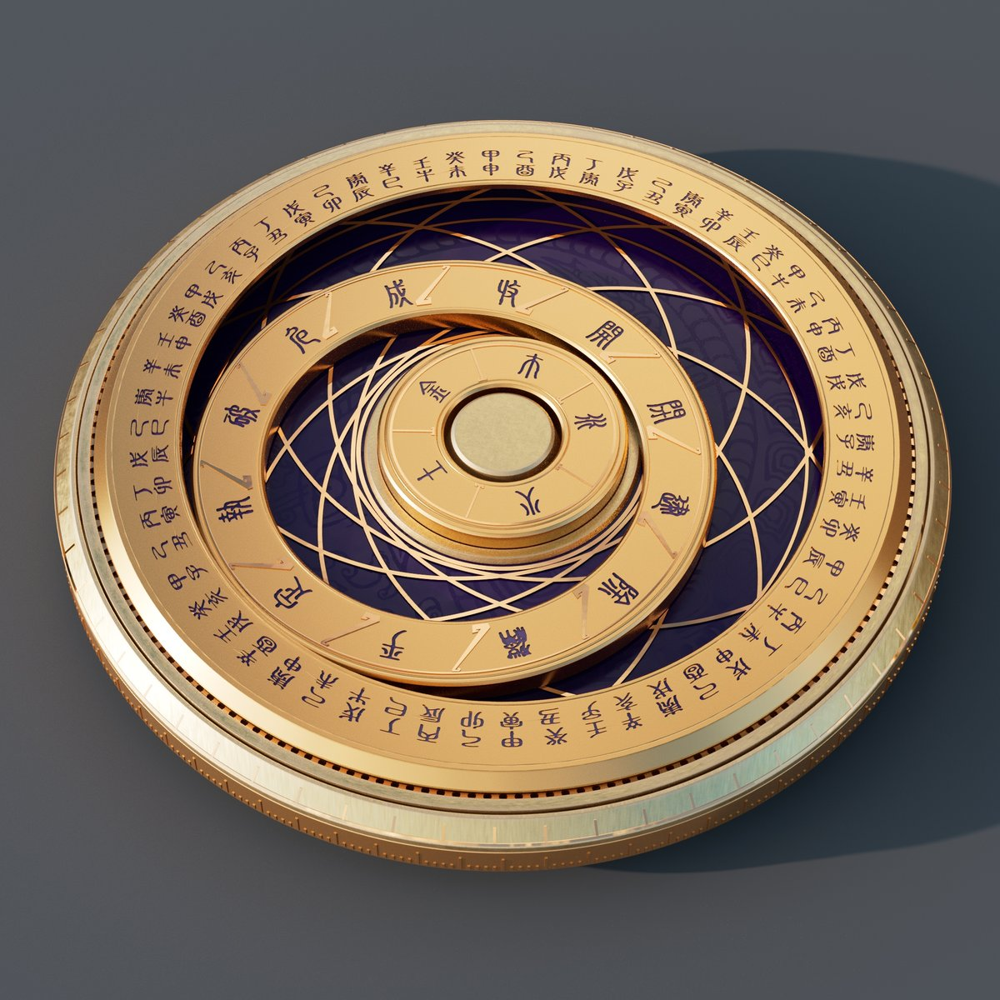
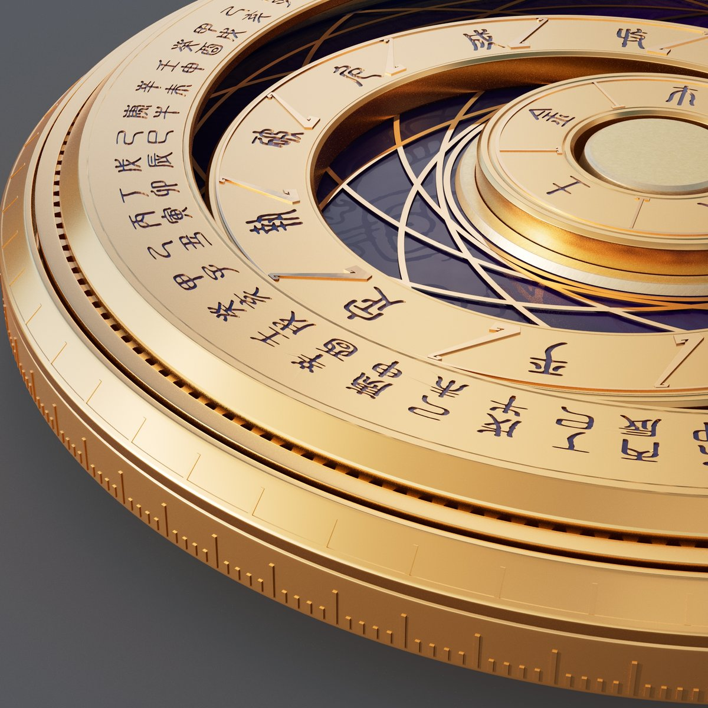

基于中国传统通胜算法的智能决策罗盘
从日常选择困境到传统历法智慧的现代唤醒
人的一生总在做不同选择，每个选择都是新的开始。生活中我们总有无数想做的事情——旅行、学一项新技能、看一场电影、换一套家具——但大多数想法只停留在"想想"的阶段，很快就被遗忘。同时，面对众多选择时，选择困难症让人迟迟无法行动，最终错过很多美好的体验。
曾是家家户户童年记忆的通胜日历，承载着传统历法对"何时做何事"的智慧指引，却随时代变迁逐渐被遗忘。我们希望用智能硬件罗盘，将这份童年里的"老黄历"以新方式唤醒，让传统决策逻辑成为年轻人面对选择时的文化依据，让每个新开始都有温暖的传统记忆托底。
无数想法只停留在"想想"阶段，缺乏记录与沉淀的载体
面对众多选项迟迟无法行动，错失美好体验
通胜日历等传统智慧随时代变迁逐渐被遗忘
快节奏生活中缺少让决策变得庄重而有意义的仪式
硬件为主体、小程序为配套的通胜历法决策系统
| 项目 | 内容 |
|---|---|
| 产品名称 | 即刻罗盘（英文：NowPlan Compass） |
| 一句话描述 | 一款以传统通胜历法为内核的智能硬件罗盘，配套小程序实现灵感记录与仪式化决策，用传统通胜逻辑解决选择困难 |
| 核心卖点 | 灵感随手记录、选择有通胜历法依据（非纯随机）、实体转盘仪式感、硬件APP双向同步 |
| 解决痛点 | 日常选择困难、突发灵感易遗忘、生活缺少仪式感、传统通胜文化断代 |
| 核心理念 | 传统传承·时间之器；由小到大、自律而非惩罚；让每个新开始都有传统记忆托底 |
| 目标用户 | 20-35岁年轻人群，选择困难症、传统文化爱好者、追求生活仪式感用户 |
| 参赛赛道 | 硬件交互（主）/ 生活娱乐（备） |
通胜历法算法、三环联动系统与选择模式
以二十四节气为分界确定当月月建，作为建除十二神计算基准。当月月建对应的地支日为「建」日，顺时针顺排 建、除、满、平、定、执、破、危、成、收、开、闭，12天为一循环。
| 建除 | 吉凶 | 含义 |
|---|---|---|
| 建 | 吉 | 开始、建立 |
| 除 | 吉 | 清除、整理 |
| 满 | 平 | 圆满、满足 |
| 平 | 平 | 平稳、平淡 |
| 定 | 吉 | 稳定、确定 |
| 执 | 平 | 坚持、执行 |
| 破 | 凶 | 破坏、破损 |
| 危 | 凶 | 危险、谨慎 |
| 成 | 吉 | 成功、成就 |
| 收 | 吉 | 收获、收藏 |
| 开 | 吉 | 开放、开始 |
| 闭 | 凶 | 关闭、结束 |
选择事件时，自动关联当日建除值日神与事件类型：
| 层级 | 转动方式 | 停止位置 |
|---|---|---|
| 外层（甲子60格） | 顺时针快速旋转3圈 | 随机停在有效事件格 |
| 中层（建除12格） | 顺时针慢速旋转1圈 | 当日固定值日神刻度 |
| 内层（五行5格） | 固定不转动 | 作为基准层显示当日五行 |
基于当日建除吉凶，优先抽取适配事件。强关联通胜，结果带吉凶标识。
用户滑动转盘自主选择。选中后显示对应通胜匹配结果。
按事件标签过滤后再选择。过滤后仍匹配当日通胜属性。
| 颜色 | 含义 | 触发条件 |
|---|---|---|
| 🟢 绿色 | 已完成 | 用户标记完成 |
| 🟢 绿色（推荐） | 通胜宜办 | 当日建除吉日与事件类型匹配 |
| ⚪ 白色/默认 | 正常待办 | 刚录入或7天内 |
| 🟠 浅红 | 临近过期 | 超过7天未完成 |
| 🔴 深红 | 严重超期 | 连续5周未完成 |
| ⬜ 灰色 | 已归档/忌办 | 6周以上未完成 或 通胜忌办 |
航天级铝合金机身，三层同心转盘，智能光显系统


直径120mm × 厚度16mm
重量268g
航天级铝合金机身
CNC精雕 + 阳极氧化
深紫底色配金色刻度
外层石鼓文蚀刻六十甲子
精密轴承旋转
底座设固定基准指针
| 操作 | 触发 | 反馈 |
|---|---|---|
| 短按中心按键 | 触发选择流程 | 罗盘旋转 → 选中后中层对应刻度灯光常亮 |
| 长按中心按键 | 语音录入灵感 | 语音输入 → 自动转文字 → 同步至APP |
| 选中结果 | — | 语音播报「今日宜XX，选中事件：XXX」 |
| 离线能力 | — | 基础选择、灯光、语音可离线运行，联网后自动同步 |
| 方向 | 指令 | 说明 |
|---|---|---|
| App → 硬件 | SYNC_EVENTS | 同步事件列表至硬件外层槽位 |
| App → 硬件 | SYNC_CALENDAR | 同步当日通胜数据（建除/五行） |
| App → 硬件 | TRIGGER_SELECT | 远程触发硬件转盘选择 |
| 硬件 → App | SELECT_RESULT | 返回选中事件索引与对应通胜信息 |
| 硬件 → App | VOICE_NOTE | 上传硬件语音录入的灵感事件 |
| 硬件 → App | STATUS | 返回硬件电量、连接状态 |
配套硬件的灵感记录与仪式化决策界面
Tab导航
├── 📋 首页（灵感事件流） — 默认页
├── 🔮 选择（罗盘交互） — 核心功能
├── 🏆 成就（徽章墙） — 成就展示
└── 👤 我的（设置） — 个人中心 + 硬件管理
次级页面
├── 新增灵感（表单/语音录入）
├── 事件详情
├── 硬件配对（蓝牙连接）
└── 通胜日历（当日宜忌与历史查询）| 功能 | 说明 |
|---|---|
| 事件列表 | 按时间倒序展示，已完成置底 |
| 快速录入 | 底部悬浮按钮，支持文字、语音两种方式 |
| 状态筛选 | 顶部Tab：全部 / 待处理 / 已完成 / 已归档 |
| 标签颜色 | 每条事件左侧显示当前状态色条 + 通胜推荐标识 |
| 进度卡片 | 顶部显示三环进度（外60/中12/内5） |
| 逾期提醒 | 浅红/深红事件置顶显示 ⚠ 标 |
Demo必须实现的核心页面。
| 字段 | 类型 | 必填 | 说明 |
|---|---|---|---|
| 标题 | 文本 | 是 | 事件描述，最多50字 |
| 事件类型 | 单选 | 否 | 用于匹配通胜宜忌，默认「其他」 |
| 标签 | 单选 | 否 | 分类标签 |
| 备注 | 文本 | 否 | 补充说明，最多200字 |
| 截止日期 | 日期 | 否 | 不设则无过期提醒 |
| 优先级 | 三选一 | 否 | 普通/重要/紧急 |
Event、Calendar、Badge、Stats 核心数据结构
interface Event {
id: string;
title: string;
type: string; // 事件类型（用于通胜匹配）
tag: string; // 分类标签
note?: string; // 备注
deadline?: string; // 截止日期 YYYY-MM-DD
priority: 'normal' | 'important' | 'urgent';
status: 'pending' | 'doing' | 'done' | 'archived';
createdAt: string; // 创建时间 ISO
doneAt?: string; // 完成时间 ISO
selectedCount: number; // 被选中的次数
overdueWeeks: number; // 超期周数
slotIndex?: number; // 对应硬件外层槽位编号
}interface DailyCalendar {
date: string; // YYYY-MM-DD
monthBuild: string; // 月建（寅/卯/辰/巳/午/未/申/酉/戌/亥/子/丑）
dutyGod: string; // 当日建除值日神
wuxing: string; // 当日五行（金/木/水/火/土）
suitable: string[]; // 宜事项
avoid: string[]; // 忌事项
}function getTagColor(event: Event): 'green' | 'default' | 'lightRed' | 'darkRed' | 'gray' {
if (event.status === 'done') return 'green';
if (event.status === 'archived') return 'gray';
const weeksSinceCreation = getWeeksSince(event.createdAt);
if (weeksSinceCreation >= 6) return 'gray'; // 6周以上 → 自动归档
if (weeksSinceCreation >= 5) return 'darkRed'; // 5周 → 深红
if (weeksSinceCreation >= 1) return 'lightRed'; // 1-4周 → 浅红
return 'default'; // 7天内 → 默认白色
}
function getTongShengRecommendation(event: Event, calendar: DailyCalendar): 'recommend' | 'neutral' | 'avoid' {
if (calendar.suitable.includes(event.type)) return 'recommend'; // 宜办 → 推荐
if (calendar.avoid.includes(event.type)) return 'avoid'; // 忌办 → 避免
return 'neutral'; // 中性
}状态同步、空白填充与四阶段实现路线
小程序为控制端，硬件为执行端。
| 阶段 | 目标 | 内容 |
|---|---|---|
| 第一阶段：小程序 MVP | 验证用户需求 | 事件清单、数字选择器、记录分享功能 |
| 第二阶段：硬件原型 | 结构验证 | 3D 打印结构原型、蓝牙同步模块开发 |
| 第三阶段：软硬件联调 | 完整体验 | 实时同步、指针控制、选择动画优化 |
| 第四阶段：商业功能接入 | 商业闭环 | LBS 推荐服务，美食/景点等消费场景 |
目标用户、使用场景与产品价值
| 用户类型 | 特征描述 |
|---|---|
| 选择困难症患者 | 面对多个选项时犹豫不决，需要外部机制帮助快速决策 |
| 想法多行动少的人 | 经常冒出各种创意和计划，但缺乏执行力去落实 |
| 追求生活仪式感的年轻人 | 喜欢用有设计感的实物产品提升生活品质 |
| 桌面摆件爱好者 | 热衷于收集有创意、有故事性的桌面装饰品 |
中午吃什么、下班后是否运动、晚上看什么书
随时记录想法，不再让灵感溜走
标签变色提醒，推动自己开始行动
直观看到行动积累，生成海报分享
| 维度 | 价值 |
|---|---|
| 效率提升 | 从日常小选择建立行动惯性，将"想做的事"转化为"正在做的事" |
| 情感价值 | 仪式感降低决策焦虑，自律而非惩罚的设计理念 |
| 商业潜力 | 硬件礼品属性 + LBS 消费决策入口，形成完整商业闭环 |
从个人决策工具到消费决策入口
生活中的很多选择本质上也是消费选择，即刻罗盘与商业功能天然契合：
根据用户位置匹配附近美食，加载到罗盘让你选择。合作商户获得精准流量。
根据位置匹配附近景点和活动，加载到罗盘让你选择。可接入 OTA 平台。
从个人决策工具到消费决策入口，"选择"本身就是高价值的商业场景。硬件建立品牌认知和用户粘性，LBS 推荐实现商业变现。
Demo开发技术栈建议
| 层级 | 建议方案 |
|---|---|
| 框架 | 微信小程序 / H5 (Vue/React) |
| 动画 | CSS Animation + requestAnimationFrame |
| 状态管理 | 小程序原生 / Pinia(Vue) / Zustand(React) |
| 数据存储 | localStorage / IndexedDB |
| 开发工具 | TRAE IDE |
| 通胜计算 | 前端算法实现（建除/五行/月建计算） |
产品演进过程中的关键设计决策
type 字段，用于通胜宜忌匹配（区别于分类标签 tag）